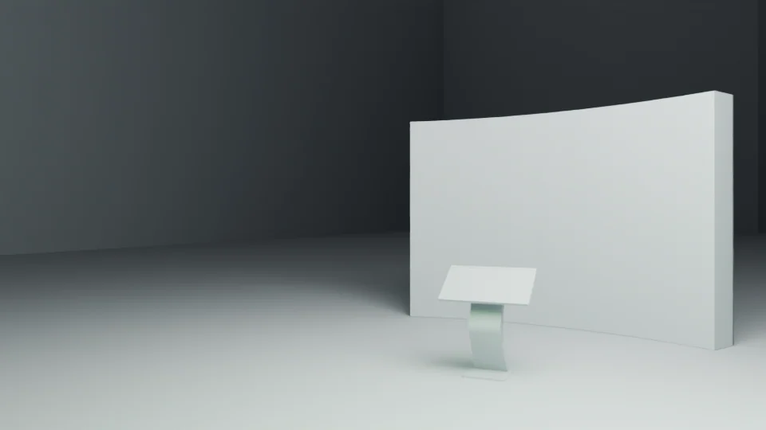

Curved display wall
A broad, slightly curved upright display wall defines the rear of the arrangement.
A small control point for a large shared screen.
Explore the story
Clarify the visual relationship between a visitor console and an upright display.
A curved wall sits behind an angled control surface on a freestanding support. Neutral materials preserve the arrangement while incomplete interface textures stay absent.
A broad, slightly curved upright display wall defines the rear of the arrangement.
An angled control surface sits on a freestanding curved support in front of the display.
The arrangement places a small visitor control surface in front of a larger shared display.
Explore the complete compositions and interface states. Select any image for a closer look.
Structure, interaction and visual decisions that give the work its character.
RoleUser-confirmed work. Original modeling and authorship of every source asset are not inferred from that confirmation.
AssetsThe owner confirms this project as their work. Individual model, prop and supplied-component authorship is not inferred. This is a fresh neutral technical preview from an existing saved camera, not an original final delivery image or a demonstration of working interaction. Original geometry and object transforms are retained. All surface artwork is bypassed by a view-layer material override because linked textures are incomplete; no missing artwork is invented. Public-use clearance remains pending.
StatusUser-confirmed project work; native technical preview. Final textured appearance, delivery and public-use status remain unverified.